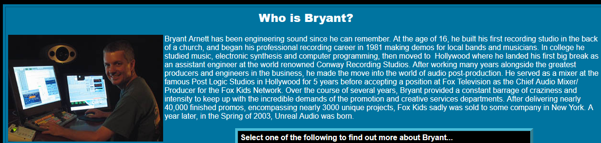

"You know, I think you get a little better with every single drawing you do."
-My dad, to me handing him a crudely drawn dragon on printer paper
The website you are browsing now was the final birthday gift I received from my late father, Bryant Arnett. For my 28th he got me the web domain nociception.net, but he never got to see me enjoy it.
My father was a huge reason I am the way I am. He taught me to have a ceaseless curiosity for the world. He'd answer every question I ever had honestly, because he saw me as a growing person and never a dumb kid. If I wanted to tackle something, like learn a song on an instrument Ive never played before, or hack Spore(2008) so I could have cooler creatures, he would help me get started. He saw me fail in a LOT of endeavors of course, but he would never hesitate in helping me try something new anyways.
He was a sound engineer, and he would include me and my siblings in his work all the time. Me and my sisters little toddler voices are forever immortalized as various background sounds in the English dubs of a few series such as "Viewtiful joe", "Teenage Mutant Ninja Turtles", and "Digimon Adventures" (I used to LOVE bragging about the latter to my schoolmates), though of course these went uncredited in the show so I cant exactly prove it. Its a memory I'll hold onto so dearly though, being in the dusty, dark, but very fun recording studio making some nonsense noises and crowd chatter for a cartoon!! You can even see him in this insane little vhs from the nineties: Skip to 6:44. My whole family found this video hilarious, its so cheesy 90s it hurts.
He did sound work for every kind of media you can think of, and did music recordings for many people including Metallica, Weird Al, The Jets, and many more I cant remember off the top of my head. He was a really accomplished person and had so many amazing stories. I always told him he should write a book or something about the different bands he got to work with, but sadly he never got to.
He was always getting into tech way ahead of its time. Before drones were commonplace (looong before you needed to get license for them), he would build his own and fly them with a makeshift VR headset (his phone, strapped to his face). He was able to get "online" multiplayer in a video game in the 80s by using a telephone.
Speaking of games, he was a gamer since games were invented!! He even worked on a few, doing sound for Clay Fighter and Sim-Ant to name a couple. The most amazing thing video-game related he did however, was this incredible recreation of The Outlook Hotel from "The shining", in duke nukem 3d in 1997, the year I was born!! I shared it with duke nukem community recently and was shocked to see many people there already knew it and remember playing it themselves in the 90s!! I dont know much about duke nukem myself, but according to those who played it its immensely impressive for its time. And I agree. Find it here.
He was awesome. He was awesome and thats why it hurts so badly hes gone so suddenly. He was still working on a lot of things when it happened, and it pains me he never got to enjoy finishing those projects. But a life full of passion and love is never truly "Finished", now is it?
Wherever you are now, dad, I hope you can see this. Thank you for this website. Best birthday gift I ever got, honest. I'll keep creating until my very last day, I can promise that much.
